Практичні курси · журнал «ДентАрт» 2019 №4
Швидкість без втрати якості при відновленні контактів бічних зубів
SPEED WITHOUT LOSS OF QUALITY WHEN RESTORING THE CONTACTS OF THE POSTERIOR TEETH
Ксенія Лазарєва,клініка-студія «Аполлонія» (м. Полтава, Україна)
Прямі композитні реставрації бічних зубів – звичайне завдання у повсякденній практиці лікаря-стоматолога. У цій статті описано спрощений підхід, заснований на одномоментному відновленні кількох контактних поверхонь зубів і моделюванні оклюзійної поверхні відповідно до збереженої анатомії зубів в одному секторі. Це допомагає клініцистам виконувати швидше відновлення, яке вимагає меншої кількості оклюзійних коригувань, дозволяє реставрувати більшу кількість зубів за менший проміжок часу.
Головним завданням реставрації бічних зубів і для лікаря, і для пацієнта є функціональна реабілітація. Однак часто зустрічаються ситуації, коли пацієнт, припускаючи втручання лише в один із зубів, який його непокоїть, резервує для лікування недостатньо часу. Стоматологові завжди правильніше відновлювати кілька зубів в одному секторі одночасно, що дозволяє виконати правильніший контур усіх проксимальних поверхонь, скоротити час втручання, зменшити обсяг травматизації, полегшити реабілітаційний період. Таким чином, затрати часу часто є вирішальним фактором втручання. Гострий каріозний процес іноді не дає можливості відтермінувати втручання, і лікар не має достатньо часу для копіткого і тривалого моделювання жувальної поверхні. Як оптимізувати процес і де можна виграти такий дорогоцінний час, обговоримо в цій статті.
Дефекти класу II за Блеком – найпоширеніша причина втручання в бічних секстантах. Слід зазначити, що незважаючи на розвиток і доступність діагностичних можливостей, таких як трансілюмінація, лазерна флюоресценція, найпростішим і найдоступнішим методом залишається прицільна рентгенографія. Тому при будь-якому консультаційному зверненні рекомендоване виконання прикусних рентгенограм усіх бічних зубів. Рентгенограма дозволяє виявити каріозне ураження за повної відсутності його клінічних проявів, виявити вторинний карієс. Однак важливо пам’ятати, що негативний результат рентгенологічного дослідження не є стовідсотковою гарантією відсутності каріозного ураження в зубі.
Перед початком препарування слід визначити точки оклюзійних контактів за допомогою артикуляційного паперу, по можливості краї пломби не повинні розташовуватися на ділянках основного оклюзійного контакту із зубами-антагоністами, фотодокументування допомагає зробити аналіз і полегшує правильну адаптацію зубів у прикусі. У відповідності із сучасними принципами адгезивної стоматології препарування зубів з каріозним ураженням слід робити без превентивного розширення, створення ретенційних просторів, дизайн препарування диктує власне дефект тканин, немає необхідності у висіченні пігментованого дентину. Особливу увагу слід приділяти приясенній стінці – якщо не видалити всю демінералізовану емаль, то можливий рецидив карієсу. Часто при препаруванні невеликих спірних дефектів у зоні фісур поверхню можна інфільтрувати після мінімального препарування за допомогою ультразвуку. На емалі жувальної поверхні бічних зубів слід виконати згладжування країв фінішним бором, а на вестибулярній поверхні створити скіс емалі, щоб нівелювати перехід з реставрації на реставровану основу.
Швидкість моделювання бічних зубів залежить від уміння оператора розпізнавати рельєф бічних зубів, копіюючи натуральні оклюзійні поверхні, але спростивши їх форми до кількох базових ліній, яких достатньо для розуміння будови зуба. Спираючись на основні принципи морфології, подані на рисунках 1-4, можна з легкістю контролювати цей процес. Викладемо основні принципи.
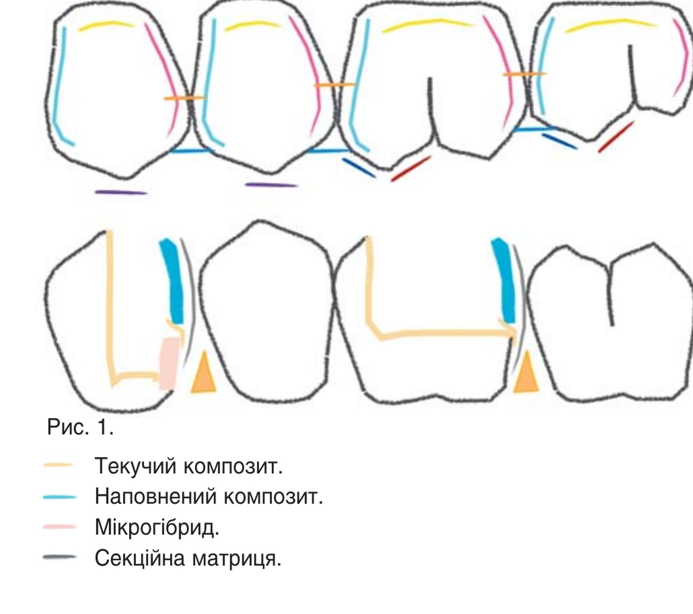
Екватор усіх бічних зубів виражений різною мірою в залежності від кривизни коронки зуба і розташований приблизно за 1-1,5 мм до емалево-цементної межі. Кожна жувальна поверхня складається з кількох горбиків у формі піраміди. Оклюзійний рельєф на жувальній поверхні формують фісури, ямки, валики і гребені. Горбик вищий від валика на той самий обсяг, на який ямка нижча від валика, і це зумовлено кутом, під яким площини і горизонтальні межі сходяться в залежності від оклюзійної кривизни. Оскільки зуби розташовані по кривій, кожен горбик, який стоїть позаду, вищий приблизно на рівний відрізок. А ось валики двох зубів, що стоять поруч, в нормі перебувають на одному рівні, вони є важливим оклюзійним елементом і мають приблизно однаковий об’єм.
Дистальна поверхня вестибулярних горбиків довша, ніж мезіальна, бо всі зуби мають доцентровий напрям.
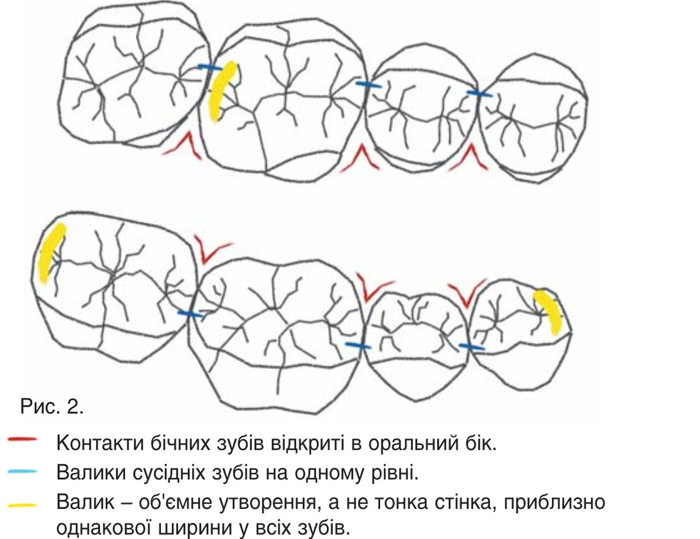
Кривизна проксимальних контактних стінок різна, і точки мезіального і дистального контактів рівновіддалені від валика. Дистальна поверхня більш округла, і точка контакту міститься приблизно посередині поверхні, мезіальна поверхня більш стрімка, і точка контакту розташована ближче до валика. Контактні поверхні бічних зубів відкриті в оральний бік. На жувальній поверхні основними факторами оклюзії, які впливають на характер контакту бічних зубів під час руху нижньої щелепи, є такі елементи морфології, як висота і функціональна приналежність горбиків, кут нахилу їх скатів, напрямок крайових гребенів і фісур.
Вершина опорних горбиків розташована по середині їх об’єму, а у напрямних зміщена до краю. Таким чином, щічні бугри верхніх зубів і язичні нижніх мають більш загострений дизайн з додатковими напрямними вдавленнями, а піднебінні верхніх і відповідно щічні нижніх зубів мають заокругленішу форму. Окремого аналізу вимагає рисунок фісур першого, другого і третього порядків.
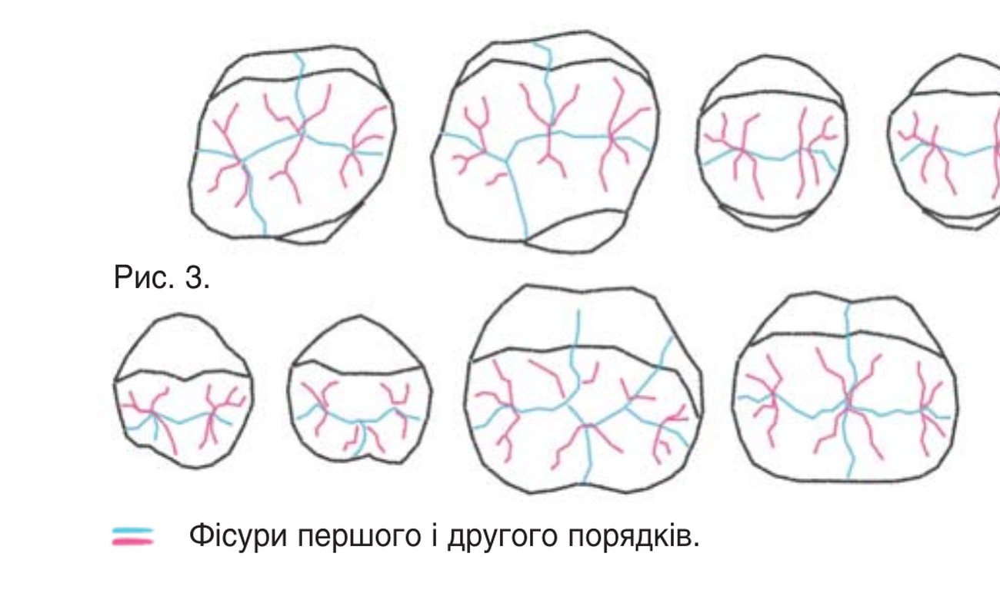
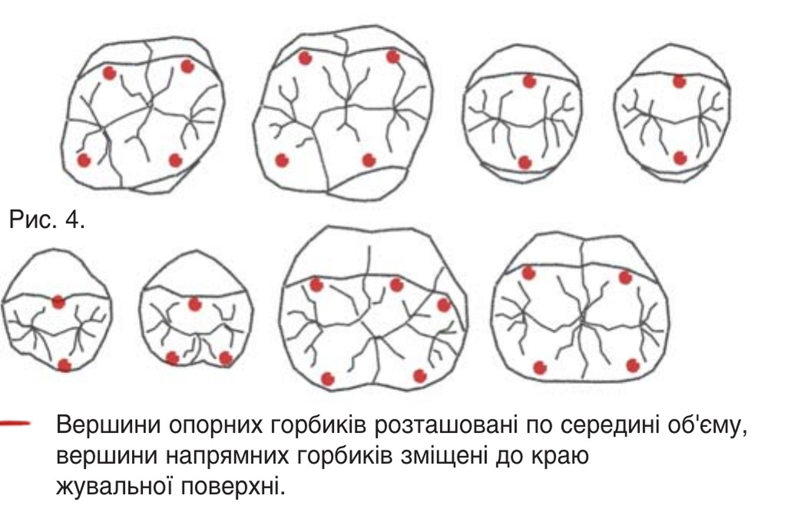
Фісури першого порядку найглибші на оклюзійній поверхні, відповідають за оклюзійні рухи і формують активну центральну дугу статичної оклюзії. Фісури другого порядку формують морфологію оклюзійної поверхні і розподіляють кожен горбик на частини, їх функція – подрібнення і перетирання їжі. Фісури третього порядку (поверхневі) визначають функцію дренажної системи коронки зуба і можуть бути не виражені при згладженому рельєфі поверхні.
Відновлення зуба завжди починається з відновлення стінок. Причому створення правильного профілю жувальної поверхні і правильної кривизни проксимальних стінок зумовлене вже цим етапом. Відновлення проксимальної стінки підпорядковується певним правилам. Побудова стінки можлива лише за умови попереднього покриття дна текучим або наповненим композитом, що поліпшує склеювання і запобігає пропітнінню адгезивного шару під час маніпуляції. При глибоких дефектах, коли неможливо підхопити матрицею краї емалі, потрібне двоетапне відновлення. Спочатку слід відновити пришийковий об’єм за допомогою адаптованої викроєної металевої смужки і клина, щоб отримати правильний профіль проксимальної стінки без нависання чи ум’ятини, і тільки потім відновити стінку із застосуванням секційної матричної системи, наприклад Palodent V3 (Dentsply Sirona). Незалежно від обраної техніки відновлення проксимальної стінки, слід застосовувати текучий композит і полімеризувати весь об’єм одномоментно, щоб запобігти появі щілин, пор і нависань. Іноді проксимальна стінка за наявності доступу може бути відновлена в техніці вільного моделювання без застосування секційної матриці, що дозволяє більш гладко адаптувати і притерти композит до поверхні.
Детальніше ми розглянемо етапи реставрації дефектів проксимальної поверхні бічних зубів на прикладі двох клінічних випадків.
Клінічний випадок 1
Пацієнтка звернулася для санації зубів перед ортодонтичним лікуванням. За висновком лікаря-ортодонта, потрібна була заміна старої пломби в зубі 26, проте після діагностичних знімків було виявлено карієс на всіх проксимальних поверхнях цього бокового секстанта. Попередньо зроблено фотофіксацію оклюзійних контактів перед препаруванням, що допоможе на етапах інтеграції в оклюзії і контролю. Після очищення поверхні професійною пастою підібраний відтінок матеріалу Ceram.X SphereTEC. Цей матеріал простий у застосуванні, легко полірується завдяки вмісту сферичного наповнювача різного діаметру, має гарні мануальні властивості і завдяки спрощеній палітрі відтінків універсальної опаковості може бути використаний у техніці моновідтінкової реставрації.
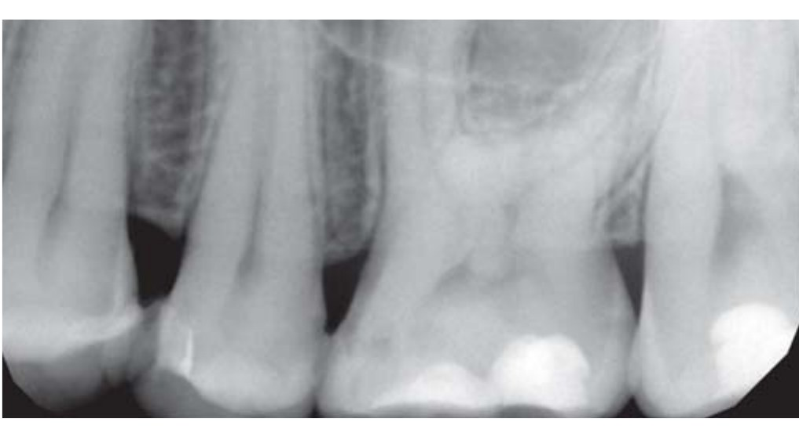
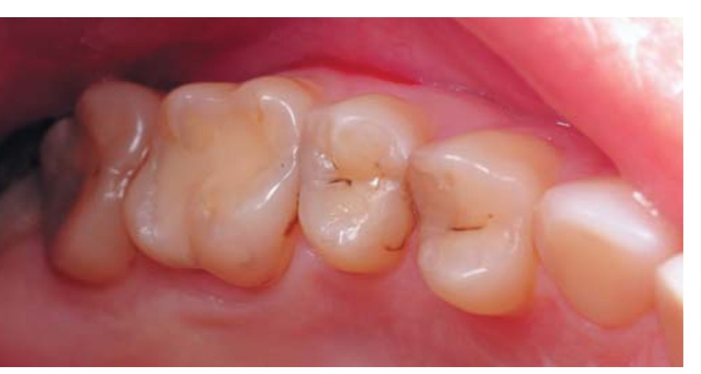
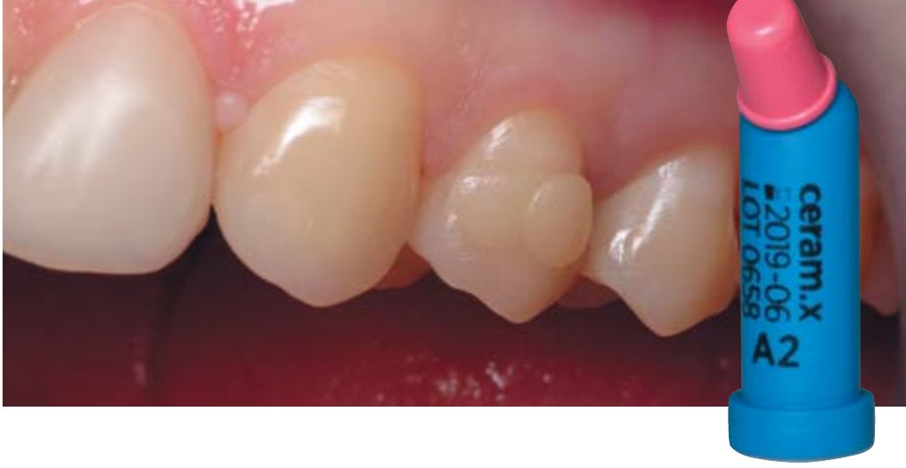
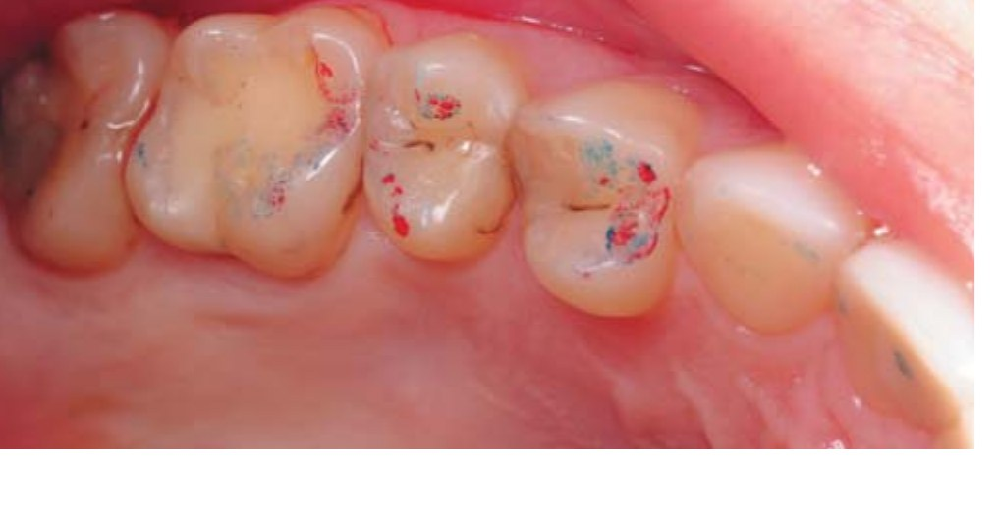
Під анестезією було зроблене первинне препарування без тиску кулястим бором із зеленим маркуванням, орієнтоване на дефект, з обов’язковим водяним охолодженням. Далі краї емалі згладжено овоїдним бором із жовтим маркуванням, видалено пошкоджені, ослаблені під час препарування ділянки емалі. Техніка тотального протравлювання виконувалася строго за таймером, протокол протравлювання стандартний для зубів із завершеною мінералізацією: емаль – 30 с, дентин 15 с. Як адгезив, використовувався Prime&Bond One Select (Dentsply Sirona), який працює за будь-якої техніки протравлювання і не чутливий до пересушування дентину. Експозиція адгезиву 20 с. Важливо, що цей адгезив утворює досить щільну плівку на поверхні, яка вимагає сильнішого роздування для видалення розчинника. Гібридний шар у всіх порожнинах було стабілізовано і запечатано текучим композитом SDR. Це запобігає пропітнінню адгезивного шару, вирішує проблему подальшого відшарування з дентином, знижує полімеризаційний стрес, який може призвести до полімеризаційного відриву і як наслідок – післяопераційної чутливості. Запечатування робилося відразу у всіх відновлюваних зубах секстанта, хоча відновлювали зуби поетапно від дальших до ближчих.
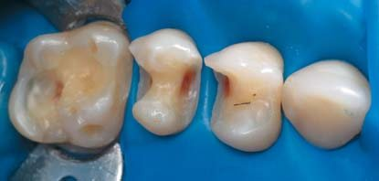
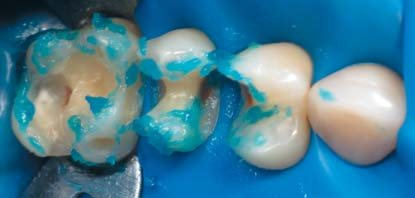
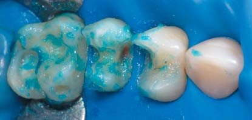
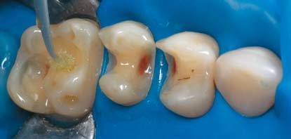
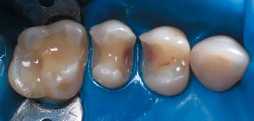
Відновлення зуба 26
Відновлення дефекту почали з мезіальної поверхні, що можна було зробити без матричної системи в техніці вільного моделювання – завдяки доступу з боку сусіднього зуба. Така тактика дозволяє контролювати всі елементи, якісніше адаптувати і включювати матеріал до тканин зуба. Важливо, щоб сусідній зуб був ізольований за допомогою кламера, обв’язування чи адаптації тефлоновою стрічкою, які притиснуть латексну завісу і дадуть гарний доступ до пришийкової межі порожнини. Далі зуб відновлювався погорбиково, що знижує полімеризаційний стрес, перешкоджає появі «білої лінії» по межі реставраційний матеріал/емаль і більш комфортно для оператора, бо не вимагає складного маніпулювання об’ємною порцією композиту, дозволяє орієнтуватися за збереженими топографічними елементами і основними лініями фісур.
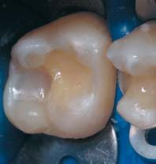
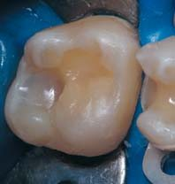

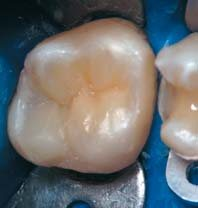
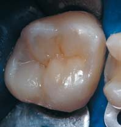
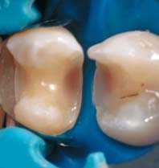
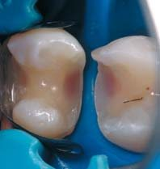
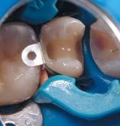
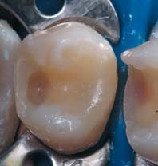
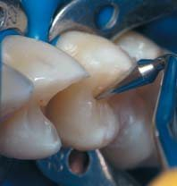
Відновлення зуба 25
Дистальні поверхні було відновлено за допомогою оновленої матричної системи Palodent V3. Усі системи секційних матриць, крім самих матриць різних видів, включають сепараційні кільця, для встановлення яких між зубами зазвичай застосовують спеціальні щипці для накладення клінів. Можна побачити рекомендації одночасно встановлювати такі матриці на кілька контактних поверхонь, однак це може негативно позначитися на щільності отримуваних контактів і таке встановлення вимагає більшого розведення зубів для отримання щільних контактних пунктів. Це критично для тонких збережених стінок при великих дефектах і може призвести до появи тріщин.
Ми рекомендуємо як силер використовувати текучий композит (у цьому випадку SDR), який перший вносимо під секційну матрицю в невеликій кількості і розподіляємо тонкою гладилкою уздовж прилягання секційної матриці до стінок зуба. Завдання цієї порції текучого композиту полягає в компенсації нещільного прилягання матриці і заповненні тих циліндроподібних просторів, які не можуть бути заповнені щільним композитом. Матеріал не полімеризується до повного формування всієї контактної поверхні. Наступним при вшиковку частину контактної поверхні вносимо прямо з капсули Ceram.X SpereTEC. Внесену порцію композиту потрібно ретельно притерти до поверхні секційної матриці, витісняючи тим самим текучий композит. Усі надлишки текучого композиту повинні бути видалені з простору контактної поверхні. Формують крайовий валик і видаляють надлишки тонкою гладилкою. Висота крайового валика зумовлена висотою валика сусіднього зуба. Завдання наповненого композиту – забезпечити міцність і стійкість до стирання контактної поверхні, що реставрується, в зоні контактного пункту і крайового валика. Далі застосований той самий підхід, що й при відновленні мезіальної поверхні зуба 26. Важливо не забути акуратно відтиснути слизову оболонку і завісу кламерами, щоб отримати гарний огляд і доступ.
Погорбикове закриття середини зуба 25 також виконується поетапно – спочатку щічний, а потім піднебінний об’єм. Слід зазначити, що ключовим фактором успішної реставрації є здатність оператора орієнтуватися в морфології зуба, ніби розгадуючи анатомічний кросворд, де відкриті ключові літери. Спираючись на збережені площини, ми можемо дуже точно відтворити поверхню і отримати передбачувану інтеграцію реставрації в оклюзії. Зробити це можна лише за наявності адекватних моделювальних інструментів, наприклад таких, як гладилки LM-Arte Applica, Modella, Fissura, жовта гладилка з ріжучою гранню.
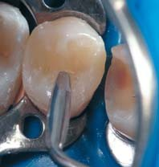
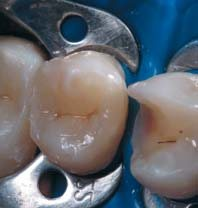
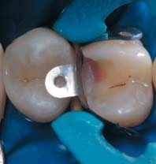
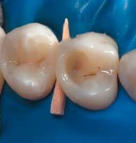
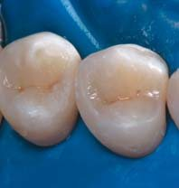
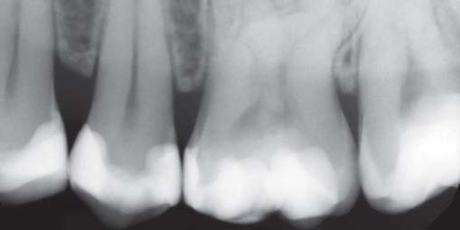
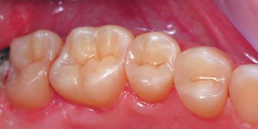
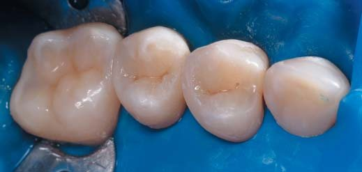
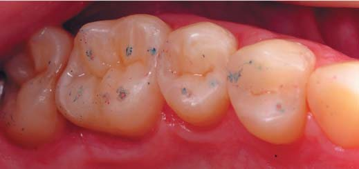
Відновлення зуба 24
Завершальний етап реставрації всього сектора – відновлення зуба 24 із застосуванням матричної системи Palodent V3 у тій самій техніці, що й при відновленні зуба 25.
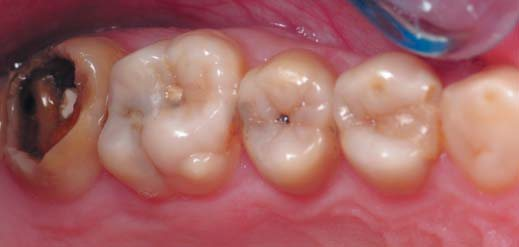
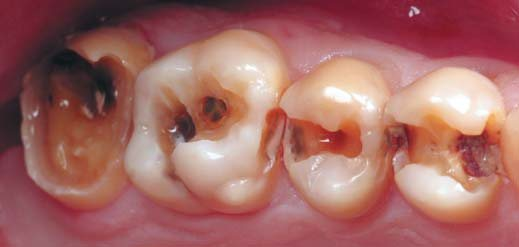
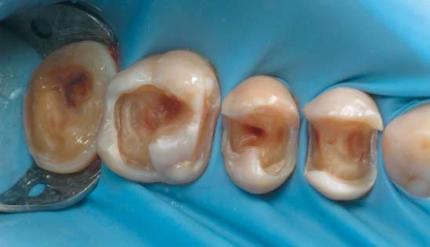
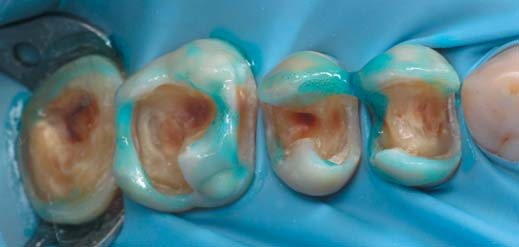
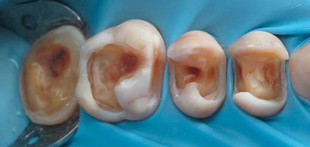
Реставрація після адаптації реставрованих зубів у прикусі і полірування. Контрольна рентгенограма
У всіх зубах виконана характеризація фісур композитною фарбою за стандартним протоколом. Остаточна фінішна полімеризація робилася після адгезивного запечатування всіх піднятих під гліцерином протягом 20 с для кожного зуба для запобігання появи шару, інгібованого киснем, і полегшення полірування фісур. Перед зняттям рабердаму виконані послідовна обробка всіх контактів металевими і лавсановими матрицями, видалення надлишків фінішним бором у пришийковій зоні і зоні переходу з контактної поверхні на власні тканини, а також первинне шліфування системою Enhance під рабердамом – для зменшення ризику ушкодження ясенного краю.
Після перевірки оклюзійних контактів за допомогою артикуляційного паперу і фольги Бауш зроблені адаптація зубів по прикусу і полірування поверхні. На контрольній рентгенограмі зафіксовано відсутність нависань і гарний перехід на власні тканини.
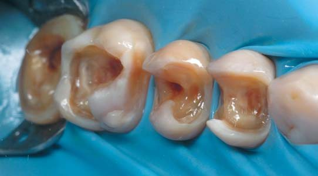
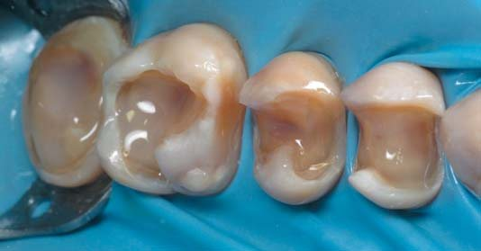
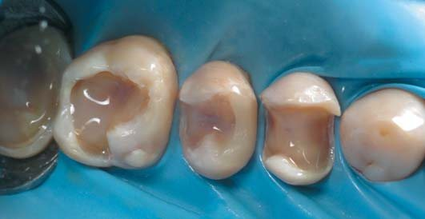
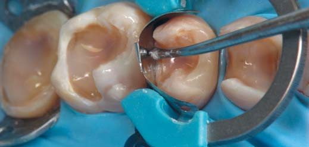
Клінічний випадок 2
У другому клінічному випадку продемонстровано схожий підхід в одночасному секторальному відновленні з невеликими варіаціями і викладено важливі нюанси, які полегшують і прискорюють реставраційні етапи.
У клініку звернувся пацієнт, який вважав себе здоровим і припускав проблеми лише з одним зубом на лівій верхній щелепі. Після об’єктивного огляду та діагностичних рентгенограм виявлено об’ємні каріозні ураження практично всіх бічних і передніх зубів. Було складено повний план лікування, обґрунтовано необхідність тотальної санації ротової порожнини, корекції харчування, контролю за гігієною ротової порожнини і, можливо, консультації терапевта. Таким пацієнтам дуже важливо продемонструвати порожнини після первинного розкриття до повної некректомії як обґрунтовуючий фактор втручання. Остаточне препарування зроблене під рабердамом. Каріозний процес був гострий, дентин розм’якшений і знімався пластами, тому тонка емаль стінок зуба 27 повністю видалена. У цьому клінічному випадку ми використовували методику селективного протравлювання емалі, коли емаль протравлюють протягом 15-30 с в залежності від мінералізації. Тут для адгезивного склеювання ми застосували Prime&Bond Universal, бо він стійкий до різного ступеня вологості дентину, може використовуватися у всіх техніках протравлювання, більш гідрофільний і має невелику товщину плівки. Ця адгезивна плівка вимагає м’якшого роздування повітряним струменем. Далі вся поверхня дентину була покрита SDR, у кожному зубі шар текучого матеріалу, що самоадаптується, полімеризувався протягом 20 с. Проксимальні валики там, де дозволяв доступ, побудовані одночасно однією порцією композиту і заполімеризовані протягом 10 с.
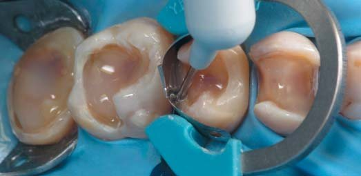
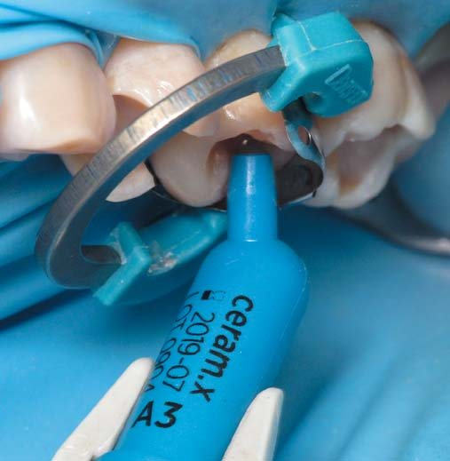
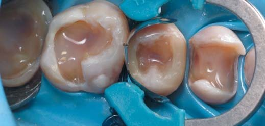
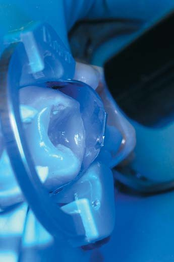
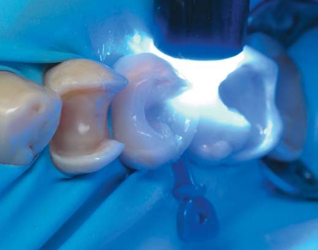
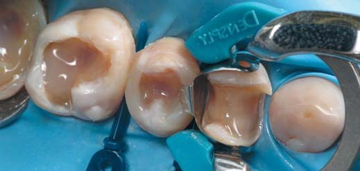
Проксимальні контакти було побудовано за допомогою системи Palodent V3. Важливо посилити точку контакту до сусідньої поверхні кулястим штопфером. Тут ми маємо на увазі кілька завдань. Контролюємо щільність контакту, адаптуємо точку контакту в залежності від морфології. Відомо, що кривизна проксимальних поверхонь різна. Профіль дистальної поверхні округліший, і точка контакту міститься посередині поверхні, профіль мезіальної поверхні пряміший, і точка контакту ближче до проксимального валика. Далі вноситься невеликий обсяг наповненого композиту, який віддавлює обсяг текучого і притирається до стінок порожнини з формуванням валика. Надлишок композиту слід видалити тонкою гладилкою під кутом до матриці, щоб уникнути утворення сходинки.
Якщо профіль валика треба обробити за допомогою штрипси, краще це зробити після остаточної побудови, щоб не засипати ошурками поверхневий інгібований шар. Оскільки об’єм композиту досить великий і прикритий металевою матрицею, його слід ретельно прополімеризувати протягом 20 с і після зняття кільця і видалення секційної матриці – по 10 с з вестибулярного і орального боку.
У тій самій техніці виконувалася побудова проксимальних поверхонь зуба 14. Контакти не оброблялися.
Заповнювати оклюзійний об’єм краще не однією порцією одномоментно. Основні топографічні орієнтири допоможуть сформувати оклюзійну анатомію простим способом без втрати пропорцій. Ключовий момент – правильно інтерпретувати інформацію про зуб зі збереженої анатомічної форми. Можна керуватися підказками: нахилом скатів горбиків, що залишилися, і локалізацією фісур або тим, що залишилося від них. Ключовим моментом є визначення центру моделювання, який буде відправною точкою всіх основних ліній, і топографія підкаже, де вони мають закінчитися.
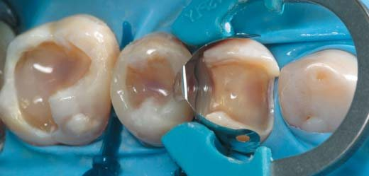
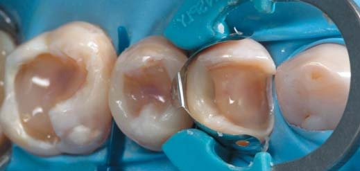
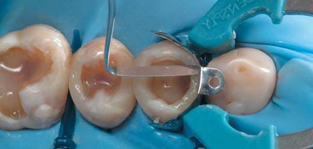
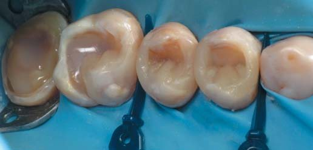
Відновлювали зуб погорбиково, починаючи з піднебінного оклюзійного об’єму всіх трьох зубів. Основна гладилка для моделювання скосів і площин горбиків – LM-Arte Modella, а інструментом LM-Arte Fissura рухи здійснюються уздовж фісури від центру до периферії для правильного зміщення матеріалу і формування борозни. Можна виконувати зсув об’єму сухим аплікатором, пензликом або силіконовою гладилкою.
Характеризація фісур робиться на фінішному етапі. Її завдання – не лише внесення фарбувального пігменту, але й запечатування піднутрень у профілі фісури за допомогою адгезиву. Після побудови останнього об’єму композиту матеріал полімеризується близько 3 с кожен зуб, у фісуру вноситься композитна фарба Brown2 (Micerium), розбавляється адгезивом, залишається в палітрі після адгезивної обробки, після видалення надлишків аплікатором полімеризується 3 с і вноситься гліцерин, усі зуби полімеризуються по 20 с.
За показаннями зуб 27 можна було відновити і в прямій, і в непрямий техніці, проте ми, орієнтуючись на сусідні зуби, будучи лімітовані в часі, відновимо цей зуб у техніці прямої реставрації. Для поновлення адгезивного шару поверхня заполімеризованого раніше SDR знову обробляється Prime&Bond Universal. Завдяки використовуваній у цьому адгезиві оптимізованій системі «вода – ізопропанол» його можна застосовувати протягом 30 хвилин зберігання в закритій палетці Clixdish. Він не містить HEMA, UDMA, TEGDMA і бісфенолу, що робить його менш алергенним, містить PENTA і MDP-мономер, здатний утворювати нерозчинні солі, забезпечуючи стабільний хімічний зв’язок з тканинами зуба і ковалентні зв’язки з композитом.
Довільний дефект зуба 27 ми відновлювали у певній послідовності: похідний дефект – мезіально-оклюзійно-дистальний дефект – мезіально-оклюзійний дефект – оклюзійний дефект. Спочатку відновили оральну і вестибулярну стінки і дистальну поверхню. Важливо відновити кути переходу оральної і вестибулярної поверхонь у контактні. Далі слід відновити мезіальну контактну поверхню з опорою на відтворені кути зовнішніх стінок і перевести дефект МО в дефект О. Відновлення мезіальної контактної поверхні за допомогою матричної системи має деякі нюанси: для щільнішої адаптації в зоні переходів з вестибулярної і оральної поверхні на контактну його можна виконати модифікованим широким пластиковим клином, іноді потрібна адаптація за допомогою тефлонової стрічки.
Таким чином завершується процес переведення довільного дефекту в дефект класу I, який усувається пошарово. Дентин відновлено текучим низькомодульним композитом SDR, а шар емалі, також погорбиково, – матеріалом Ceram.X ShereTEC, відтінку A3.
Усі контактні поверхні оброблені по черзі металевою дрібнозернистою штрипсою – видаляємо полімеризований поверхневий шар під захистом клина, який частково сепарує зуби, оберігаючи точку контакту від зішліфовування; перехід на пришийкову зону реставрованої основи обробляється без клина тонкою лавсановою штрипсою. Гладкість переходу перевіряється флосом, що легко разволокнюється.
Попередня обробка включає обробку фінішними борами (пришийковим і полум’яподібним) жовтого маркування, видаляються надлишки текучого композиту в пришийковій зоні, зоні переходів і на контактній поверхні валиків. Далі поверхня первинно загладжується формами Enhance (зворотноконусна форма для пришийкової зони і згладжування горбиків, конусна форма для обробки жувальної поверхні). Така обробка запобігає додатковій травмі слизової оболонки.
Після зняття рабердаму бажано зробити перерву для відпочинку м’язів і суглоба пацієнта, які полегшать адаптацію по прикусу. Полірування виконується полірувальними щітками Occlubrush і пастами PrismaGloss. Контроль прилягання – на рентгенограмі.
Висновки
Різноманітність пропонованих матеріалів, поява нових матеріалів зі зниженим полімеризаційним стресом, прості моновідтінкові композити, комбінація методик, технік реставрації дають можливість оптимізувати тактику лікування в різних клінічних ситуаціях. Знання принципів моделювання, базових морфологічних понять і використання матричних систем дозволяють отримати оптимальний результат з анатомо-фізіологічної точки зору і знизити затрати часу на оклюзійну адаптацію. Одночасне відновлення секстанта з негайним запечатуванням дентину після препарування забезпечує прийнятний результат реставрації при менших затратах часу. Якщо ми витрачаємо менше часу на почергове препарування, ізоляцію, етап адгезивної підготовки, етапи моделювання, то маємо більше часу на деталізацію і/або фінішну обробку та полірування реставрації.
Література
- Акмалова Г. Н. Функциональные проблемы при восстановлении жевательной группы зубов // Проблемы стоматологии. – 2009. – №1-2. – С. 23-27.
- Грютцнер А. Текучий композит ЭсДиАр – умный заместитель дентина // ДентАрт. – 2011. – № 1. – С. 45-48.
- Ломиашвили Л. М. Клиническое применение модульных технологий в эстетической реставрации зубов / Л. М. Ломиашвили, Л. Г. Аюпова. М.: Медицинская книга, 2004. 252 с.
- Луцкая И. К. Эстетическое восстановление жевательной группы зубов / И. К. Луцкая, Н. В. Новак, В. В. Горбачев // Современная стоматология. – 2006. – № 2. – С. 54-57.
- Макеева И. М. Восстановление зубов светоотверждаемыми композитными материалами / И. М. Макеева, А. И. Николаев. М.: МЕДпресс-информ, 2011. 368 с.
- Мартынов А. «Метод циркуля» в восстановлении жевательной архитектуры // ДентАрт. – 2011. – № 2. – С. 11-18.
- Николаев А. И. Практическая терапевтическая стоматология / А. И. Николаев, Л. М. Цепов. М.: МЕДпресс-информ, 2008. 948 с.
- Радлинский С. Реставрация боковых зубов: конструкции и классы // ДентАрт. – 2000. – № 1. – С. 31-40.
- Радлинский С. Реставрация боковых зубов: стратегия и принципы // ДентАрт. – 1999. – № 4. – С. 19-29.
- Радлинский С. Реставрация контактных поверхностей в боковых зубах // ДентАрт. – 2011. – № 1. – С. 22-40.
- Юдина Н. А., Саврасова А. В., Люговская О. В. Интерпроксимальный метод рентгенографии в стоматологии. Белорус. мед. акад. последипл. образования, Белорус. гос. мед. ун-т сост.: Юрис. Минск, 2012. С. 8.
- Bichacho N. The centripetal build-up for composite resin posterior restorations. Pract Periodontics Aesthet Dent. 1994 Apr.
- Caixeta RV, Guiraldo RD, Kaneshima EN, Barbosa AS, Picolotto CP, Lima AE, Gonini Júnior A, Berger SB. Push-Out Bond Strength of Restorations with Bulk-Fill, Flow, and Conventional Resin Composites. ScientificWorldJournal. 2015;2015:452976. doi: 10.1155/2015/452976.
- Dietschi D, Spreafico R. Restauri adesivi non metallici. Attuali concetti per il trattamento dei denti posteriori. Scienza e Tecnica Dentistica Passirana di Rho, 1997; br., pp. 215.
- Giuseppe Marchetti – Single Shade Makeover. http://www.styleitaliano.org/single-shade-makeover
- Giuseppe Chiodera. Essential Lines. https://www.styleitaliano.org
- Magne P. IDS: Immediate Dentin Sealing (IDS) for tooth preparations. J Adhes Dent. 2014 Dec;16(6):594. doi: 10.3290/j.jad.a33324.
- Manauta J, Salat A. Layers: An Atlas of Composite Resin Stratification; Quintessence. Print; 2012.
- Monterubbianesi R, Orsini G, Tosi G, Conti C, Librando V, Procaccini M, Putignano A. Spectroscopic and Mechanical Properties of a New Generation of Bulk Fill Composites. Front Physiol. 2016 Dec 27;7:652. doi: 10.3389/fphys.2016.00652.
- Radhika M, Sajjan GS, Kumaraswamy BN, Mittal N. Effect of different placement techniques on marginal microleakage of deep class-II cavities restored with two composite resin formulations. J Conserv Dent. 2010;13:9-15.